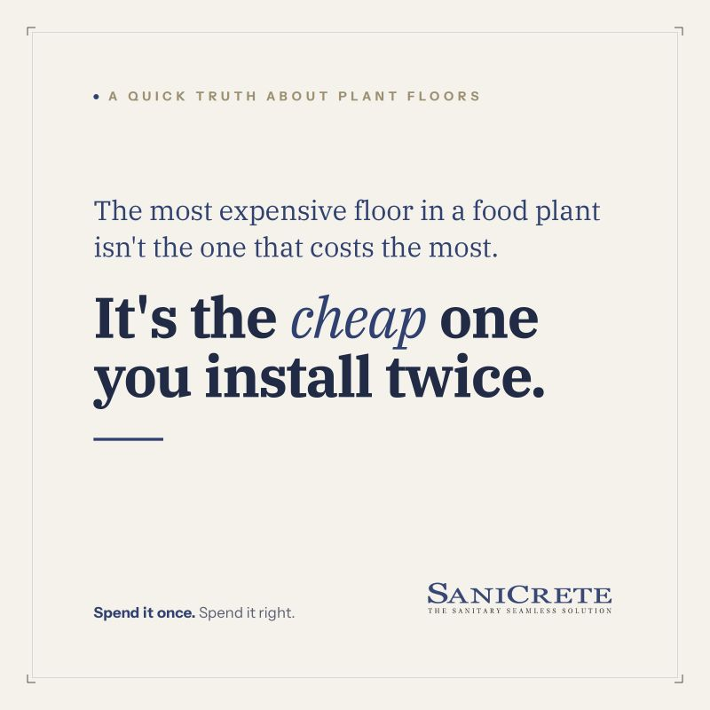

A cheap floor quote saves money exactly once: on the invoice.

After that, the wrong floor only costs you. A budget system fails later, mid-production, right when a shutdown costs the most. Redo work, lost run time, sanitation problems, and audit issues start stacking up.
Cheap Gets Expensive When Production Is Running
Food plant floors do not fail in a spreadsheet. They fail under traffic, moisture, thermal shock, sanitation chemicals, and pressure from a schedule that does not want to stop.
That is why the installed system, surface prep, details, cure schedule, and warranty all matter more than the lowest initial number.
The Point Is a Boring Floor
Done right, a floor goes in once and gets out of the plant's way. Boring, quiet, handled. That is the whole point.